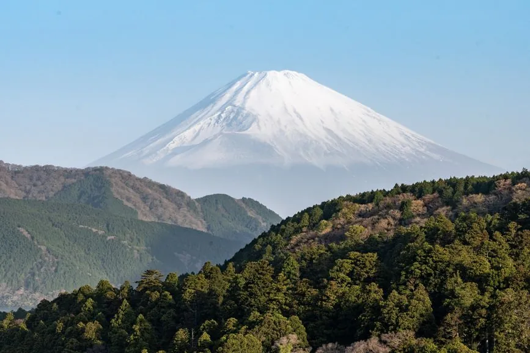

No one pays to be recommended here. Our promise → Our corrections →
In this guide11 sections
- The short answer
- The lodging tax and the bathing tax
- Getting to the lake
- The north shore: Oishi and the quiet side
- The south shore near the station
- Funatsu and the towns toward Fuji-Q
- Lake Yamanaka: a quieter lake
- How to book a luxury stay at Lake Kawaguchiko
- All 10 at a glance
- Before you go
- Frequently asked questions
A Fuji-view room at Lake Kawaguchiko has three costs that the room rate does not show: a bathing tax on hot-spring stays, a meal plan that is often the real price of a ryokan night, and the chance that the mountain is behind cloud when you wake. There is also a lodging tax on the way. It is not charged in 2026, but it is dated for April 2027, so it matters if you are booking far ahead.
This guide covers three areas around the lake and nearby Lake Yamanaka, and ten ryokan and hotels across them, with which rooms the property itself says face Mount Fuji, and which have a bath of their own. They are researched picks, chosen for location, what each property publishes and consistent guest feedback, and each was checked as operating in November 2026. No ryokan or hotel pays to appear here. If you are weighing the lake against Hakone for a hot-spring night, where to stay in Hakone compares that side, and where to stay in Japan on a first trip shows how either fits a longer route.
The short answer
| If you want… | Stay at | Why |
|---|---|---|
| a bath in the room and Fuji in the windows | Fufu Kawaguchiko | Its own site says every room is a suite with a Fuji view and an open-air hot-spring bath |
| a private open-air bath on a lake-shore ryokan | Fujikawaguchiko Onsen Konansou | Ten Fuji-side rooms with an open-air bath of their own, plus a kaiseki dinner |
| a Fuji view from the bath, at a calmer price | Ooike Hotel | Eight rooms have a bath with a view of the mountain |
| a Fuji view from every room, no bath in the room | Fujikawaguchiko Onsen Hotel Asafuji | All three room types face Fuji and the lake |
| glamping rather than a ryokan | Hoshinoya Fuji | Forty rooms on a slope above the lake |
| a quieter lake, further from the station | Hotel Mt. Fuji, Lake Yamanaka | Six of its ten room types describe a Fuji view |

Two things to know first. Cloud often hides Mount Fuji, so a “Fuji view” room describes where the window points, not what you will see; none of the properties below promises a visible mountain, and we found no official source that gives odds. And a ryokan “bath” can mean three different things: a bath in your room (often called a rotenburo when it is open-air), a private bath that you reserve by the hour (kashikiri), or a shared bath. We call a bath “private” only where the property says so.
The lodging tax and the bathing tax
| Tax | Rate | Status |
|---|---|---|
| Bathing tax (nyuto-zei), hot-spring stays | ¥150 per person per day; under-12s exempt | In force; set out in the town’s own documents |
| Fujikawaguchiko town lodging tax | ¥200 per person per night | Not charged in 2026; planned from 1 April 2027 |
The town’s tax office page lists the lodging tax as due to start on 1 April 2027 (令和9年4月1日), and Japan’s Ministry of Internal Affairs and Communications recorded its consent to the new tax on 30 June 2026 at ¥200 per person per night for hotels, ryokan, simple lodging and registered home stays, with school-trip groups exempt. The town is also paying a subsidy towards operators’ systems for it. The bathing tax is the one you meet in 2026: the town’s documents describe it as ¥150 per bather per day with no separate rate for overnight stays, and properties normally add it to the bill.

Our arithmetic, for a couple staying two nights: bathing tax of 2 × 2 × ¥150 = ¥600 in 2026, if the property charges it; from April 2027 the lodging tax would add 2 × 2 × ¥200 = ¥800. Rates and start dates can change, so treat the 2027 figures as planned, not final.
Getting to the lake
- Train: the Fujikyu Railway lists a limited express, “Fuji Kaiyu”, that runs straight from Shinjuku to Kawaguchiko Station on the Fujikyu line. It makes four round trips a day, with a fifth in some seasons, and the fastest run on its page is 1 hour 53 minutes. The fare from Shinjuku is ¥4,200 (¥2,580 basic fare plus a ¥1,620 limited express ticket). Many guides still call this train the Fuji Excursion.
- Highway bus: the bus portal for the Shinjuku to Kawaguchiko route gives about two hours, longer in busy seasons, with one-way fares from ¥1,500 (Willer Express), ¥1,800 (Keio and Fujikyu Bus) or ¥2,000 (Fujikyu Yamanashi Bus).
- Day trip instead? If you are not staying, where to book a Mount Fuji day tour compares the options.
Most properties below are a taxi or a short shuttle from Kawaguchiko Station; several offer a free shuttle if you ask when booking.
The north shore: Oishi and the quiet side
The north shore of Lake Kawaguchiko looks south across the water at Fuji. It is further from the station and from the shops, which is the reason to choose it. Plan on a shuttle or a taxi.
Where to stay on the north shore
How the hotel links work: a hotel’s name and its “Check rates” button open that hotel on Booking.com through our partner Stay22 (or, for a hotel Booking.com does not list, on Expedia, Agoda or Trip.com through Travelpayouts). They pay us a commission if you book, at no extra cost to you.
- Fufu Kawaguchiko, splurge. A small luxury resort at Mizuguchi in Kawaguchi, whose site says “All rooms are suites with a view of Mount Fuji”, with open-air natural hot-spring baths in the rooms, lined with volcanic stone from Mount Fuji. Choose it for a bath in the room and the mountain in the window. Watch out: the site does not state meal plans, room count or check-in times on its first page, so confirm what your rate includes. Check rates on Booking.com →
- Hoshinoya Fuji, splurge. A glamping resort at Oishi with 40 rooms, check-in at 15:00 and check-out at 12:00, two restaurants, a café and lounge, and a public onsen bath. Its site presents the stay as a way to enjoy Mount Fuji and describes the rooms as facing the lake. Choose it for an outdoor-resort stay rather than a ryokan. Watch out: the site does not say the rooms have a private bath, and we did not find a confirmed Booking.com page, so it is listed here without a booking link.
The south shore near the station
The shore south of Kawaguchiko Station has the largest choice, and the shortest transfer. Ryokan here tend to be lake-front or on the slope behind it.

Where to stay on the east and south shore
- Fujikawaguchiko Onsen Konansou, splurge. Its site lists ten Mt. Fuji-side rooms “all featuring a private open-air bath”, for up to four guests, and forty lake-side rooms for up to six. Dinner is a kaiseki course, breakfast a buffet, and in-room dining is possible; a “Mt. Fuji View Private Bath” is also listed. Children aged 13 and over count as adults. Choose it for a private open-air bath over a lake-shore ryokan dinner. Watch out: guests on a dinner plan must check in by 18:00 or the dinner is cancelled without refund. Check rates on Booking.com →
- Mizno Hotel, comfortable. A hillside hotel above the lake that opened in 1963; its site describes Fuji and the lake in front of the building, and runs a shuttle from Kawaguchiko Station in the afternoon. Choose it for a view-first hotel stay. Watch out: we did not confirm room-level bath details from its own site, so check the room type before booking. Check rates on Booking.com →
- Fuji Lake Hotel, comfortable. A lake-front hotel on the shore of Kawaguchiko with a Japanese-and-Western buffet, a Japanese course restaurant that needs advance booking, and a main bath with sauna and jacuzzi. Rooms come with a lake view, a Fuji view, or a private hot-spring bath, and its site says only one view is available per room. A paid private bath with a Fuji view is reserved at check-in on the day. Choose it for a classic lake-front hotel. Watch out: a room with the private bath does not also face Fuji, by the hotel’s own description. Check rates on Booking.com →
- La Vista Fuji Kawaguchiko, comfortable. A Kyoritsu Resort hotel with “view bath” rooms looking over the lake and Fuji, a natural hot-spring bath and private baths (the page does not give the number), a Western-style dinner course and a Japanese-Western breakfast buffet. Choose it for a hotel-style stay with a hot spring. Watch out: the site does not say the room bath is open-air. Check rates on Booking.com →
- Fujikawaguchiko Resort Hotel, comfortable. Lists a Japanese-Western room with Fuji view and a Japanese-style room on the Fuji side, check-in from 15:00 and check-out by 10:00, and a large bath with an indoor and an outdoor section. Dinner and breakfast buffets are on offer. Choose it for a Fuji-side room without a ryokan price in mind. Watch out: no bath in the room or private bath is mentioned on the page. Check rates on Booking.com →

Funatsu and the towns toward Fuji-Q
Between the lake and the Fuji-Q Highland side the hotels are larger and often built for families, with the mountain seen from the upper floors. Two are worth a look for a Fuji-view bath.
Where to stay near Funatsu and Asagawa
- Ooike Hotel, comfortable. Its site lists eight rooms with a bath that looks at Fuji: one top-floor suite in the annex, with a jacuzzi bath, and seven deluxe rooms in the annex and main building, one of them with an open-air bath. Choose it for a view from the bath without the highest prices. Watch out: the room page does not say whether the shared or reservable baths are separate from those eight rooms, and it is a family-oriented hotel rather than a quiet adults’ inn. Check rates on Booking.com →
- Fujikawaguchiko Onsen Hotel Asafuji, comfortable. Its site says every room has a view of Mt Fuji and Lake Kawaguchiko, across three room types; only the Superior room is listed as having a private bathroom, and the page does not say it is open-air. Dinner is sukiyaki and breakfast Japanese-style, and the hotel is about six minutes by car from Kawaguchiko Station with a shuttle if you reserve. Choose it for a Fuji view in every room at a lower price. Watch out: a “private bathroom” here is not stated to be an open-air bath. Check rates on Booking.com →
Lake Yamanaka: a quieter lake

Lake Yamanaka is the largest of the Fuji Five Lakes and sits to the east of Kawaguchiko, in a different town, Yamanakako village. It is a base if you would rather have a hotel than a ryokan evening.
Where to stay at Lake Yamanaka
- Hotel Mt. Fuji, comfortable. On the Yamanaka lakeshore, with six of its ten room types described as facing Fuji (Standard Twin, Superior Twin, Double, Imperial Suite, Suite and Junior Suite); the Imperial Suite is described as the room with the best view in the hotel. Choose it for a Western-style room and a mountain view. Watch out: its room page mentions no open-air bath in any room. Check rates on Booking.com →
How to book a luxury stay at Lake Kawaguchiko
- Count the taxes. The bathing tax is on the bill in 2026; the lodging tax is dated for April 2027.
- Read the room type, not the property name. Several of these properties have Fuji-view rooms, lake-view rooms and bath rooms as separate categories; at Fuji Lake Hotel, only one view is offered per room.
- Read the meal plan. At a ryokan, dinner and breakfast are usually part of the rate; Konansou cancels dinner if you check in after 18:00.
- Read the cancellation line. Hotel booking sites compared explains the differences between rates.
- Pick the season for the view. Cloud can hide the mountain at any time; autumn leaves around the lake bring the crowds, so weekends and holidays book first.
All 10 at a glance
| Hotel | Area | Tier | Best for | Watch out for |
|---|---|---|---|---|
| Fufu Kawaguchiko | North shore | Splurge | A bath in the room, Fuji in the window | Meal plan not stated on its first page |
| Hoshinoya Fuji | North shore (Oishi) | Splurge | Glamping above the lake | No private bath stated; no Booking.com link |
| Fujikawaguchiko Onsen Konansou | South shore | Splurge | A private open-air bath with kaiseki | Check in by 18:00 on a dinner plan |
| Mizno Hotel | South shore | Comfortable | A hillside view hotel | Room-level baths not confirmed |
| Fuji Lake Hotel | South shore | Comfortable | A classic lake-front hotel | One view per room |
| La Vista Fuji Kawaguchiko | South shore | Comfortable | A hotel with private baths to book | Room bath not stated open-air |
| Fujikawaguchiko Resort Hotel | South shore | Comfortable | A Fuji-side room | No private bath stated |
| Ooike Hotel | Funatsu | Comfortable | A Fuji-view bath | Family-oriented |
| Fujikawaguchiko Onsen Hotel Asafuji | Asagawa | Comfortable | Fuji in every room | Private bathroom not stated open-air |
| Hotel Mt. Fuji | Lake Yamanaka | Comfortable | A Western room by Yamanaka | No open-air room bath |
 Partner link · Welcome PickupsPre-book an airport transfer on Kiwitaxi
Partner link · Welcome PickupsPre-book an airport transfer on Kiwitaxi Read nextWhere to Stay in Japan on a First Trip
Read nextWhere to Stay in Japan on a First TripBefore you go
- A data connection helps for shuttle times and checking the mountain before you leave. See the best travel eSIMs for 2026 and the best eSIM for Japan.
- A prepaid ryokan night is hard to refund if a trip is cut short: see the best travel insurance for 2026 and travel insurance for Japan.
- For the other Japan taxes you will meet on the way, see Japan’s tourist taxes in 2026.
Frequently asked questions
Is there a lodging tax at Lake Kawaguchiko in 2026?
No lodging tax is charged in 2026. Fujikawaguchiko town lists a lodging tax as due to start on 1 April 2027, at ¥200 per person per night. The bathing tax of ¥150 per person per day applies to hot-spring stays now.
Which Kawaguchiko ryokan have an open-air bath in the room?
By their own sites: Fufu Kawaguchiko (open-air hot-spring baths in the rooms) and Fujikawaguchiko Onsen Konansou (ten Mt. Fuji-side rooms with a private open-air bath). Ooike Hotel has eight rooms with a Fuji-view bath, one of them open-air.
Can I see Mount Fuji from every room?
Only where the property says so. Fufu Kawaguchiko says all rooms are suites with a Fuji view, and Asafuji says every room has a view of Mt Fuji and the lake. Cloud often hides the mountain, so a Fuji-view room is not a guarantee of a view.
How do I get from Shinjuku to Lake Kawaguchiko?
The Fuji Kaiyu limited express runs direct to Kawaguchiko Station, fastest run 1 hour 53 minutes, ¥4,200 one way. Highway buses take about two hours, with fares from ¥1,500 to ¥2,000.
What is the difference between a private bath in the room and a reservable private bath?
A room bath is yours for the stay. A reservable private bath (kashikiri) is a shared facility you book for a set time, as at Fuji Lake Hotel, where it is reserved at check-in on the day.
Is Lake Yamanaka a good alternative to Kawaguchiko?
It is quieter and in a different town. Hotel Mt. Fuji there describes six of its ten room types as facing Fuji, but its room page mentions no open-air bath in any room.
Sources & further reading
- Fujikyu Railway: limited express Fuji Kaiyu
- Fujikyu Railway: JR direct train from Tokyo
- Highway bus portal: Tokyo to Kawaguchiko
- Fujikawaguchiko town: tax office page, lodging tax from April 2027
- Fujikawaguchiko town: lodging tax system subsidy notice
- Ministry of Internal Affairs and Communications: new lodging tax in Fujikawaguchiko, consent of 30 June 2026
- Fujikawaguchiko town: lodging tax committee report, with the bathing tax rate
- Official websites of each hotel named above, checked in November 2026
Ryokan and hotels reprice and change room categories. Every detail here was checked in November 2026; confirm rates, bath arrangements and meal plans on the booking page before you pay. Mount Fuji is often hidden by cloud, so a Fuji-view room does not guarantee a view. These are researched picks, not reviews. This article contains affiliate links: hotel rates on Booking.com and other booking sites through Stay22; if you book through them we may earn a commission at no extra cost to you. No ryokan or hotel pays to be included.
Keep reading on Gently Yonder
 Where to Stay in HakoneFive areas and 12 ryokan and hotels, and which have a private open-air bath.
Where to Stay in Japan on a First TripTwo bases beat four: how many nights in Tokyo, Kyoto and Osaka, and moving day in between.
Where to Stay in HakoneFive areas and 12 ryokan and hotels, and which have a private open-air bath.
Where to Stay in Japan on a First TripTwo bases beat four: how many nights in Tokyo, Kyoto and Osaka, and moving day in between.

Where to Book a Mount Fuji Day TourKlook and KKday both sit at about ¥7,800, so price is not the decision — the month, the departure time and the cancellation line are. Best eSIM for Japan (2026)How to choose a Japan travel eSIM — coverage, data plans, and the pick for most trips.
Best eSIM for Japan (2026)How to choose a Japan travel eSIM — coverage, data plans, and the pick for most trips.
 Travel Insurance for JapanDo you actually need it? Japanese healthcare costs, what policies cover, and honest picks.
Travel Insurance for JapanDo you actually need it? Japanese healthcare costs, what policies cover, and honest picks.